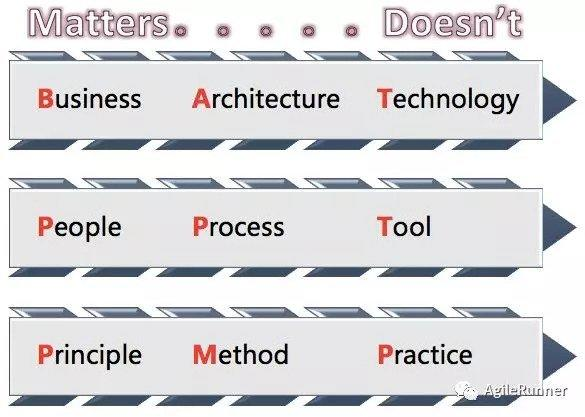

Hello World
CodeTengu Weekly 碼天狗週刊
如果命運的齒輪沒有出差錯，CodeTengu Weekly 都會在 UTC+8 時區的每個禮拜一 AM 10:00 出刊。每週會由三位 curator 負責當期的內容，每個 curator 有各自擅長的領域，如果你在這一期沒有看到感興趣的東西，可能下一期就有了。當然你也可以瀏覽一下前幾期的內容。
目前的 curator 陣容：
- @vinta - I failed the Turing Test - 科幻迷，最近在重讀「沙丘」系列
- @saiday - Imnotyourson - 有什麼意見進來 Run time 講啊
- @tzangms - Oceanic / 人生海海 - 最近真的都在玩薩爾達
- @fukuball - ImFukuball - 有新工作了，但歡迎直接挖角
- @mingderwang - Ethereum enthusiast，最近在研究區塊鏈遊戲
- @kako0507 - 熱愛嘗試新事物的前端工程師
- @chiahsien - 我們公司在徵人
- @uranusjr - Smaller Things - 聽說 Pinkoi 少了個棒球記者現在去應徵前端應該有機會
- @kkdai - 態度萬歲 - Learning Deeply....
- @yhsiang - AMIS / MAICOIN 徵才中，歡迎聯繫！
- @johnlinvc - 挑戰自動化家中電器
- @drumrick - 歡迎加入台灣 Kaggle 交流區
- @wancw
- @allanlei
- @theJian
- @lucienlee - 🦌
你也可以關注我們的 Facebook、Twitter、GitHub 或 Open Source 專案，有很多 weekly 看不到的內容。有任何建議也歡迎來 Gitter 聊聊。
 @saiday
@saiday
Faster HLS preparation – google-exoplayer
雖然這是 ExoPlayer 的 Chunkless preparation 特性的介紹文，但其實主要都是在談 HLS 的 master playlist。
跟 HLS playback in ExoPlayer (General good practices) 這篇可以當成是 HLS 轉檔的一個最佳實踐指標。
如果你們在 Android 是用 ExoPlayer （應該都是吧？）在播放 HLS 可以看看你們的 master playlist 是不是已經提供足夠的 CODEC 資訊，如果有的話，升級、啟動 Chunkless preparation 就可以了。
離題：最近在開發 HLS 的功能，對於要不要採用 HLS AES Encryption 實在是猶豫不決，如果有先行者願意給我建議的話，我們來聊聊嘛 (;´༎ຶД༎ຶ`)
DVIA (Damn Vulnerable iOS App)
一個充滿了安全漏洞的 app，是一個可以合法練習入侵技巧的材料。
作者是資安專家 @prateekg147，除了提供材料之外，這一包裡面也已經涵蓋了挑戰的題目跟教學。
沒有絕對安全的程式，但如果因為沒有資安觀念把敏感資訊存在 NSUserDefaults、plist 或 DB 裡面被整包端走，那也是說不過去。
除了 iOS 外，有人也收集了 Vulnerable Apps, Servers, and Websites 這類可以練習侵入技巧的模擬環境，可惜還沒有 Android 的相關專案？
How does Firebase initialize on Android?
應該不是只有我在 Android 整合 Firebase 的時候疑惑過為什麼只需要把 google-services.json 擺到定位就一切就緒了吧？
原來是透過 濫用 ContentProvider 達成的。 這樣的用法完全不是你所認識的 ContentProvider。
@wancw

朴素的 DevOps 价值观
常跟朋友在說：「DevOps 是一種心態而不是特定的技術」，包含架構規劃、技術選擇，都與之息息相關。文章內容沒什麼太新的東西；不過我覺得文章開頭的圖可以擺在身邊，不時翻出來自我檢視。
7 best practices for operating containers
- 採用原生的 log 機制，GKE 有 Stackdrive Logging、Amazon EKS
- 確保 containers 是無狀態（stateless）、不會修改的（immutable）
- 避免特權 containers（可直接存取 host 環境）
- container 內的程式不要以 root 身份執行
- 讓程式易於監控，例如使用 Prometheus client libraries
- 提供程式的健康與就緒狀況
- 根據你的情境，仔細挑選 image 版號。看是要用
latest永遠用最新版或是寫死X.Y.Z鎖定在特定版本，人工決定更新時機。
更詳細的內容可以看 Best Practices for Operating Containers 。
年過 30 想轉業該怎麼做？中年轉職來得及嗎？
最怕你永遠無法下定決心踏出第一步，那不管過多久還是會保持現狀。
不過，現狀也沒什麼不好。只要問你自己，「這是你要的嗎？」而你心甘情願繼續走下去，那就沒問題了。
花了近一年多在職場上繞來繞去最後又重作馮婦的我，看到這段真是心有戚戚焉啊。獻給有類似困惑的人。
@lucienlee
Announcing TypeScript 3.0
【Frontend】
TypeScript 默默來到了第五個年頭，最近 release 的 3.0 ，雖然沒有什麼 breaking change，語法上導入了原本寫 JS 很習慣的 rest and spread parameter，但更重要的是錯誤訊息、JSX 支持以及 editor 快捷功能的改進，TypeScript 開發體驗變得更舒適了呢！
`s` (`dotAll`) flag for regular expressions • Exploring ES2018 and ES2019
【Frontend】
很多人從沒發現每個語言的正則式其實略有不同，尤其 JS 的正則式又與其他人落差更多。在 ES 2018 中，JavaScript 終於導入了 dotAll flag，讓我們可以輕易地匹配所有符號，試著想想在現今的JS中，你會怎麼做到匹配所有字元包含換行、Emoji 呢？
ERC860: Custodian-Client Contract Standard
【Blockchain】
Ethereum ERC 860 提出了一個雙層的 smart contract 結構，可以透過 Custodian-Client 的結構來做到會員、票券系統，與 ERC 721 不同的地方在於 custodian 與 client 之間可以共享 state ，可以做到更細緻的管控。
InterviewMap
【Career】
最近恰好自己面試了幾位工程師，也跟幾位有面試新人的朋友交流發現，有許多工程師用得一手好框架，但對許多基礎知識不甚扎實。或許這些人是個能搬磚的工程師，但不代表你是個能獨當一面的工程師－－能理解原理，去改造、補洞、優化自己寫的程式。希望這一份涵蓋 JS、網路、瀏覽器相關、性能優化、安全、Git、數據結構、演算法的前端面試考題集，能讓大家更好準備下一次面試。
不過當然，你是不是個好工程師，不代表你能不能賺大錢。
工作機會
Senior Backend Developer at Swag
薪資：年薪新台幣 100 萬元以上。
基本條件：
- In-depth knowledge of Python
- Experience with Python web frameworks, ie. Flask, Django, or Tornado
- Utilized work queues for background processing
- In-depth knowledge of MongoDB, Redis, and Kubernetes
- Excellent understanding of HTTP
- Experience developing REST APIs